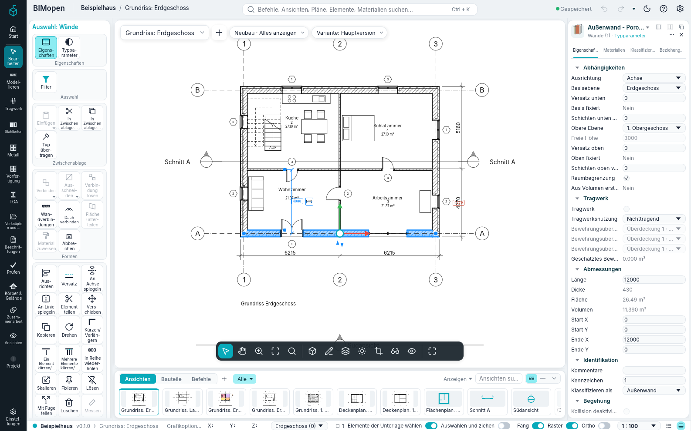
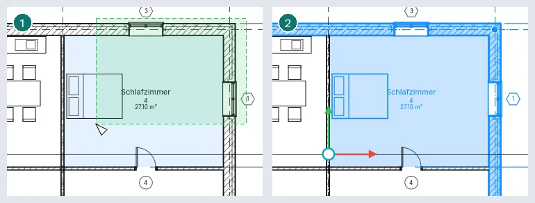
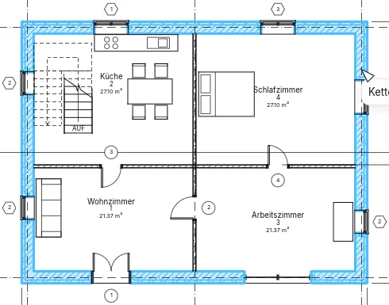
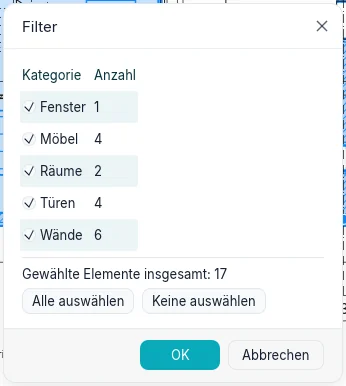
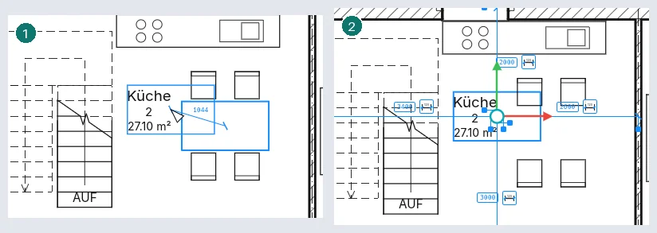
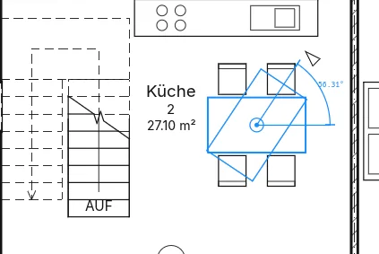

Auswählen und Ändern
Vor fast jeder Änderung wählen Sie aus, was geändert werden soll. Dieses Kapitel beschreibt, wie Elemente hervorgehoben und ausgewählt werden, wie man eine Auswahl verfeinert, wie ausgewählte Elemente gezogen werden, und die Werkzeuge der Gruppe Ändern. Alles funktioniert in der Desktop-Anwendung und im Browser gleich.
Hervorheben und auswählen

Bewegen Sie den Cursor über ein Element: seine Linien werden breiter gezeichnet, die Statusleiste unten im Fenster nennt es (Kategorie und Typ, als Wände : Außenwand…), und nach einem Moment erscheinen dieselben Worte unter dem Cursor. Klicken Sie, um das hervorgehobene Element auszuwählen. Ein ausgewähltes Element wird in jeder Ansicht, in der es erscheint, in der Auswahlfarbe gezeichnet, und die Zahl am rechten Ende der Statusleiste sagt, wie viele Elemente ausgewählt sind.
Ein Rechtsklick auf ein Element wählt es aus und öffnet das Kontextmenü. Esc oder ein Klick auf eine leere Stelle hebt die Auswahl auf.
| Um… | So gehen Sie vor |
|---|---|
| ein Element der Auswahl hinzuzufügen | Ctrl + Klick |
| ein Element aus der Auswahl zu nehmen | Shift + Klick |
| auszuwählen, was ganz in einem Fenster liegt | von links nach rechts ziehen |
| auszuwählen, was ein Fenster berührt | von rechts nach links ziehen (das Fenster ist gestrichelt) |
| hinzuzufügen oder wegzunehmen, was ein Fenster erfasst | mit Ctrl oder mit Shift ziehen |
| erneut auszuwählen, was vorher ausgewählt war | Ctrl+Left, oder Rechtsklick ▸ Vorherige auswählen |

Fenster funktionieren in Grundrissen, Schnitten, Plänen und 3D-Ansichten. In einer 3D-Ansicht wählt die linke Taste aus; die rechte Taste orbitiert und die mittlere verschiebt (siehe Die Oberfläche).
Nahe beieinander liegende Elemente: TAB
Liegen Elemente nahe beieinander oder übereinander, ist das hervorgehobene vielleicht nicht das gewünschte. Halten Sie den Cursor still und drücken Sie Tab: das nächste Element unter dem Cursor wird hervorgehoben, und die Statusleiste nennt es. Shift+Tab geht zurück. Klicken Sie, um das hervorgehobene Element auszuwählen. In einer 3D-Ansicht geht Tab vom nächstgelegenen Element zu denen dahinter; auf einem Plan durch übereinander platzierte Ansichten.
Ketten von Wänden und Linien
Wände und Linien, die an ihren Enden verbunden sind, bilden eine Kette. Mit dem Cursor auf einer von ihnen hebt Tab die ganze Kette hervor (die Statusleiste sagt Kette aus n verbundenen Elementen); ein Klick wählt sie aus. Eine Kette kann Wände mit Raumtrennern und Flächenumrissen mischen; Detaillinien bilden Ketten mit den Detaillinien ihrer Ansicht. Wo sich drei oder mehr treffen, geht die Kette entlang derjenigen weiter, die mit der letzten den kleinsten Winkel bildet; eine Wand, die zwischen den Enden einer anderen an diese stößt, führt die Kette entlang dieser Wand weiter.

Teil einer Kette. Wählen Sie das erste Element des Teils aus, bewegen Sie den Cursor auf das letzte und drücken Sie Tab: die Elemente dazwischen werden hervorgehoben. Ein weiteres Tab hebt die ganze Kette hervor, ein drittes nur das letzte Element. Klicken Sie, um das Hervorgehobene auszuwählen. Bei einer geschlossenen Kette geht der Teil auf der Seite herum, auf der der Cursor steht: nahe dem Ende des letzten Elements, das diese Richtung zuerst erreicht.
In einem Punkt verbundene Elemente. Wählen Sie ein Element aus und halten Sie den Cursor darauf, nahe einem Ende, an dem andere verbunden sind. Tab hebt es zusammen mit dem nächstgelegenen dort verbundenen hervor; Tab erneut, alle dort verbundenen Elemente. Klicken Sie, um sie auszuwählen.
Eine ausgewählte Kette. Wo sich zwei ausgewählte Wände oder Linien treffen, erscheint ein runder Steuerpunkt. Ziehen Sie ihn, um den Knoten zu verschieben: die dort ausgewählten Enden bewegen sich gemeinsam und bleiben verbunden; nicht ausgewählte Elemente bleiben, wo sie sind. Ziehen Sie die Kette mit Shift, um sie ganz zu verschieben, waagerecht oder senkrecht; ziehen Sie sie mit Ctrl, um eine Kopie zu platzieren.
Eine Auswahl filtern
Klicken Sie auf die Zahl in der Statusleiste oder auf Filter in der kontextabhängigen Karte, um Filter zu öffnen. Es listet die Kategorien in der Auswahl auf, wie viele Elemente jede hat, und die Gesamtzahl. Entfernen Sie das Häkchen einer Kategorie, um ihre Elemente herauszunehmen: die Auswahl und die Zahl in der Statusleiste folgen sofort. Alle auswählen und Keine auswählen setzen oder entfernen das Häkchen bei allen Kategorien. OK behält die Auswahl, Abbrechen stellt die ursprüngliche wieder her.

Alle Exemplare auswählen
Rechtsklick auf ein Element ▸ Alle Exemplare auswählen, dann In Ansicht sichtbar (die
Elemente desselben Typs, die in der aktiven Ansicht gezeigt werden) oder Im gesamten Projekt.
SA und Enter tun dasselbe wie In Ansicht sichtbar. Das Element muss einen Typ haben:
Räume zum Beispiel haben keinen.
Elemente ziehen
Ziehen Sie ein ausgewähltes Element, um es zu verschieben; die ganze Auswahl bewegt sich mit, und ein Ziehen wird mit einem einzigen Ctrl+Z rückgängig gemacht. Eine temporäre Bemaßung zeigt die Verschiebung, die Statusleiste ihre Länge (Verschieben: 1500). Ist Auswählen und ziehen in der Statusleiste eingeschaltet, lässt sich ein Element ziehen, ohne es vorher auszuwählen; ist es ausgeschaltet, zeichnet ein Ziehen, das auf einem nicht ausgewählten Element beginnt, ein Fenster.
- Eine Wand, deren Enden mit nicht ausgewählten Wänden verbunden sind, bewegt sich nur senkrecht zu sich selbst, und die verbundenen Wände werden gedehnt, damit sie verbunden bleiben. Auch Wände, die an sie stoßen, folgen. Halten Sie Shift, um sie frei zu verschieben; die verbundenen Wände folgen trotzdem.
- Jedes andere Element bewegt sich frei; halten Sie Shift, um die Verschiebung waagerecht oder senkrecht zu halten.
- Türen und Fenster bewegen sich mit ihrer Wand und behalten ihre Stelle darin. Allein gezogen, gleiten sie entlang der Wand; auf einer anderen Wand losgelassen, wechseln sie in diese.
- Halten Sie Ctrl zu Beginn des Ziehens, um stattdessen eine Kopie zu platzieren.
Elemente werden in Grundrissen, Schnitten und Ansichten (entlang der Ansicht), auf Plänen (die Ansichten) und in 3D-Ansichten gezogen, wo sie sich auf der waagerechten Ebene bewegen, an der Sie sie gegriffen haben. Die Pfeiltasten verschieben die Auswahl um einen kleinen Schritt, gerundet auf einen sauberen Wert beim Zoom der Ansicht; mit Shift um zehn Schritte.
Die Werkzeuge zum Ändern
Die Gruppe Ändern der kontextabhängigen Karte hat drei Reihen: Ausrichten, Versatz, An Achse spiegeln, An Linie spiegeln, Element teilen, Mit Fuge teilen; Verschieben, Kopieren, Drehen, Kürzen/Verlängern, Ein Element kürzen/verlängern, Mehrere Elemente kürzen/verlängern; In Reihe wiederholen, Skalieren, Fixieren, Lösen, Löschen. Die Statusleiste sagt, was jedes Werkzeug als Nächstes erwartet, und der Optionsstreifen zeigt seine Optionen. Esc bricht den laufenden Schritt ab; erneut gedrückt, beendet es das Werkzeug.
Verschieben, Kopieren, Drehen, die beiden Spiegeln-Werkzeuge, In Reihe wiederholen und Skalieren arbeiten mit der Auswahl. Ohne Auswahl gestartet, lassen sie Sie zuerst auswählen (Klicks, Ctrl, Fenster, Tab) und fahren fort, wenn Sie Enter drücken oder Ende im Optionsstreifen.
Verschieben, Kopieren und Drehen funktionieren auch in 3D-Ansichten: ihre Punkte liegen auf der Ebene des angeklickten Geschosses.
Vor jedem Klick zeigt das Werkzeug, was der Klick bewirken würde: die Auswahl dort gezeichnet, wo sie hinkäme (verschoben, kopiert, gedreht, an der Achse unter dem Cursor gespiegelt, zur Seite des Cursors versetzt, an der Referenz ausgerichtet), dem Cursor folgend, mit dem Abstand oder dem Winkel daneben.
Wo ein Werkzeug einen zweiten Punkt verlangt, können Sie stattdessen einen Abstand (oder einen Winkel) eingeben und Enter drücken: er erscheint beim Tippen neben dem Cursor und wird in Richtung des Cursors gemessen.
Verschieben
Klicken Sie einen Basispunkt, dann das Ziel. Das Werkzeug endet, und die Elemente bleiben ausgewählt. Optionen:

- Beschränken: die Verschiebung erfolgt entlang der ausgewählten Wand oder senkrecht dazu (waagerecht oder senkrecht bei anderen Elementen);
- Trennen: mit den verschobenen verbundene Wände folgen nicht, und eine Tür oder ein Fenster lässt sich auf eine andere Wand verschieben;
- Kopieren: stattdessen werden Kopien platziert; mit Mehrfach eine bei jedem Klick bis Esc.
Kopieren
Wie Verschieben, aber es wird eine Kopie platziert. Mit Mehrfach eine Kopie bei jedem Klick bis Esc; Beschränken wie bei Verschieben.
Drehen
Der Drehpunkt erscheint in der Mitte der Auswahl; ziehen Sie ihn, um ihn woanders hinzusetzen. Klicken Sie den ersten Strahl, dann den zweiten: die Auswahl dreht sich um den Winkel dazwischen, den eine temporäre Winkelbemaßung zeigt. Statt des zweiten Strahls geben Sie den Winkel ein und drücken Enter, oder Sie geben ihn unter Winkel im Optionsstreifen ein und drücken Enter. Kopieren dreht eine Kopie; ohne Trennen folgen die mit den gedrehten verbundenen Wände.

Spiegeln
An Achse spiegeln: klicken Sie eine Wand, ein Raster oder eine Linie als Achse. An Linie spiegeln: klicken Sie zwei Punkte. Kopieren ist angehakt: eine gespiegelte Kopie wird platziert; entfernen Sie das Häkchen, um die Elemente selbst zu spiegeln.
In Reihe wiederholen
Linear: klicken Sie zwei Punkte. Nummer ist die Anzahl der Elemente insgesamt. Mit Verschieben nach: 2° geben die zwei Punkte den Abstand; mit Letztes kommt das letzte Element an den zweiten Punkt, und die anderen werden gleichmäßig verteilt. Beschränken hält die Richtung entlang der Auswahl oder senkrecht dazu.
Radial: ziehen Sie den Mittelpunkt, um den sich die Kopien drehen, klicken Sie den ersten Strahl, dann den zweiten (oder geben Sie den Winkel ein und drücken Sie Enter, auch unter Winkel). Mit 2° ist der Winkel der zwischen Nachbarn, mit Letztes die ganze Spanne.
Versatz
Verschiebt eine Wand oder Linie senkrecht zu sich selbst oder platziert eine Kopie (Kopieren ist angehakt).
- Numerisch: stellen Sie Versatz ein, dann klicken Sie das Element auf der Seite, auf die es soll. Drücken Sie vorher Tab, um die ganze Kette (derselben Kategorie) als eine zu versetzen: ihre Ecken bleiben erhalten.
- Grafisch: klicken Sie das Element (Tab für die Kette), dann zwei Punkte: deren Abstand, senkrecht zum Element, ist der Versatz. Sie können ihn auch eingeben. Ctrl kopiert.
Ausrichten
Klicken Sie die Referenz, dann das auszurichtende Element: die Fläche des Elements, die Ihrem Klick am nächsten liegt, kommt auf die Fläche der Referenz, die deren Klick am nächsten liegt. Bevorzugt: wählt Wandflächen oder Wandachsen. Nach dem Ausrichten erscheint ein Schloss auf der ausgerichteten Fläche: klicken Sie es, um beide ausgerichtet zu halten, sodass ein Verschieben der Referenz das andere mitnimmt. Ohne Mehrfachausrichtung wählt der nächste Klick eine neue Referenz; mit ihr (oder mit gedrückter Ctrl) richten Sie mehrere Elemente an derselben aus. Esc einmal beginnt eine neue Ausrichtung, zweimal beendet es das Werkzeug.
Eine an einem Raster ausgerichtete und gesperrte Wand folgt ihm, wenn Sie das Raster verschieben, auch in 3D, und die an ihren Enden verbundenen Wände werden länger oder kürzer und bleiben verbunden. Mit Mit benachbarten Elementen verschieben in den Eigenschaften einer Komponente bewegt sich die Komponente mit der nächsten Wand, im gleichen Abstand.
Kürzen/Verlängern
Wände und Linien werden gestutzt oder gedehnt; klicken Sie jede am zu behaltenden Teil.
- Kürzen/Verlängern: zwei Elemente, die sich dann in einer Ecke treffen;
- Ein Element kürzen/verlängern: die Begrenzung, dann das Element;
- Mehrere Elemente kürzen/verlängern: die Begrenzung, dann nacheinander jedes Element.
Element teilen und Mit Fuge teilen
Element teilen: klicken Sie eine Wand oder Linie dort, wo sie zu zweien werden soll. Mit Inneres Segment löschen klicken Sie zwei Punkte: der Teil dazwischen wird entfernt, mit den Türen und Fenstern darin. Mit Fuge teilen: stellen Sie Fugenabstand ein, dann klicken Sie: die beiden Teile liegen so weit auseinander.
Skalieren
Wände und Linien (und die Lage von Bemaßungen) lassen sich skalieren; mit etwas anderem in der Auswahl ist Skalieren nicht verfügbar. Grafisch: klicken Sie den Ursprung, das Ende eines ersten Vektors, das Ende eines zweiten: die Elemente werden im Verhältnis der beiden Längen skaliert (die zweite können Sie eingeben). Numerisch: stellen Sie Skalierfaktor ein, dann klicken Sie den Ursprung. Türen und Fenster behalten ihren Abstand zur Mitte ihrer Wand.
Fixieren und Lösen
Fixieren hält die ausgewählten Elemente, wo sie sind: sie lassen sich weder ziehen noch mit einem Werkzeug verschieben oder löschen, und eine Meldung sagt das. Ein fixiertes Element zeigt eine Pinnnadel, wenn es ausgewählt ist; klicken Sie die Nadel oder verwenden Sie Lösen, um es freizugeben.
Löschen, rückgängig machen und wiederherstellen
Löschen (oder die Taste Del) entfernt die Auswahl und was sie beherbergt; fixierte Elemente bleiben. Ctrl+Z macht die letzte Änderung rückgängig, Ctrl+Y stellt sie wieder her: jedes Werkzeug, Ziehen oder Verschieben mit den Pfeiltasten ist ein Schritt.
Kopieren, ausschneiden und einfügen
In Zwischenablage kopieren (Ctrl+C) legt die Auswahl in die Zwischenablage; In Zwischenablage ausschneiden (Ctrl+X) legt sie dort ab und nimmt sie aus dem Projekt. Einfügen (Ctrl+V) bringt sie zurück. Die drei Schaltflächen liegen in der Gruppe Ändern der kontextabhängigen Karte, neben den anderen Arten von Einfügen; im Stil Klassisch in der Gruppe Zwischenablage. Die Tasten wirken, solange kein Werkzeug aktiv ist und kein Feld bearbeitet wird.
In einem Grundriss zeigt Einfügen die Linien des Kopierten am Cursor: Sie folgen ihm, und ein Klick legt sie dort ab. Die eingefügten Elemente bleiben ausgewählt. Außerhalb eines Grundrisses gedrückt, fügt Ctrl+V an derselben Stelle ein.
Die anderen Arten von Einfügen (im Stil Klassisch in seinem Dropdown-Menü) lassen die Elemente, wo sie waren, und brauchen keinen Punkt:
| Art | Wohin die Elemente kommen |
|---|---|
| Auf gewählten Ebenen einfügen | Die Modellelemente, an derselben Stelle, auf jede angehakte Ebene |
| In gewählten Ansichten einfügen | Die Elemente einer Ansicht (Linien, Texte, Bemaßungen…), in jede angehakte Ansicht derselben Art wie die, aus der sie kommen |
| In aktiver Ansicht einfügen | An derselben Stelle, in die geöffnete Ansicht und auf ihre Ebene |
| An derselben Stelle einfügen | Wo sie waren, auch in einem anderen Projekt |
| Auf angeklickter Ebene einfügen | In einem Schnitt oder einer Gebäudeansicht: Die dem Klick nächste Ebene wird mit ihrem Namen hervorgehoben; der Klick fügt auf ihr ein |
Die beiden Arten mit „gewählten“ öffnen ein Fenster mit einem Feld Suchen über der Liste der Ebenen oder Ansichten; haken Sie die gewünschten an und klicken Sie auf OK. Eine Art, die den Inhalt der Zwischenablage in der geöffneten Ansicht nicht einfügen kann, ist ausgegraut, und die Statusleiste sagt, warum.
- Jedes Einfügen ist ein Schritt: Ein einziges Ctrl+Z nimmt es ganz zurück.
- Die Zwischenablage bleibt erhalten, wenn ein anderes Projekt geöffnet wird; so lassen sich Elemente von einem Projekt in ein anderes einfügen. Ihre Typen kommen mit; hat jenes Projekt schon einen Typ mit demselben Namen, wird dieser verwendet. Ebenen werden über den Namen gefunden, dann über die Höhe.
- Auf einer anderen Ebene eingefügt, wird ein Element, dessen Oberkante an eine Ebene gebunden ist, an die Ebene gebunden, die ebenso viele Ebenen höher liegt; gibt es diese Ebene nicht, erhält es eine Freie Höhe mit demselben Wert.
- Die Elemente einer Ansicht werden nur in Ansichten derselben Art eingefügt; die Modellelemente bleiben bei In gewählten Ansichten einfügen außen vor, die Elemente einer Ansicht bei Auf gewählten Ebenen einfügen. Die Meldung sagt, wie viele außen vor blieben, und warum.
- Eine allein eingefügte Tür oder ein allein eingefügtes Fenster kommt in die Wand, auf die es fällt; gibt es dort keine, bleibt es außen vor, und die Meldung sagt es.
- Eine Kopie einer Gruppe wird mit ihren Mitgliedern kopiert (siehe Gruppen).
- In aktiver Ansicht einfügen ist in der Ansicht ausgegraut, aus der die Elemente kopiert wurden: dort würde es sie nicht verschieben. Öffnen Sie eine andere Ansicht, oder verwenden Sie An derselben Stelle einfügen.
- Allein kopiert, folgt eine Kopie einer Modellgruppe dem Cursor mit ihrem Ursprung.
Eingefügte Elemente bearbeiten
Nach jedem Einfügen öffnet sich Eingefügte Elemente bearbeiten: eine Leiste über der Zeichnung mit der Zahl der eingefügten Elemente, während der Rest des Projekts in Halbton erscheint und sich nicht auswählen lässt. Die eingefügten Elemente lassen sich weiter mit den üblichen Werkzeugen verschieben und ändern.
| Schaltfläche | Was sie tut |
|---|---|
| Ausgewählte abschließen | Die ausgewählten eingefügten Elemente bleiben, wo sie sind, und verlassen die Bearbeitung |
| Alle auswählen | Wählt alle eingefügten Elemente aus |
| Fertig stellen | Die eingefügten Elemente bleiben: das Einfügen und ihre Änderungen sind ein einziger Ctrl+Z-Schritt |
| Abbrechen | Die eingefügten Elemente verschwinden, wie vor dem Einfügen |
Hat ein Einfügen Elemente ausgelassen (etwa eine Tür, die keine Wand findet), sagt es die Meldung und verweist auf die Leiste.
Typ übertragen
Typ übertragen (MA), in derselben Gruppe, gibt den Typ eines Elements an andere weiter.
Klicken Sie auf das Element, dessen Typ übernommen wird: der Pinsel neben dem Cursor färbt sich,
und die Statusleiste nennt den Typ. Klicken Sie dann auf jedes Element, das ihn erhalten soll; nur
Elemente derselben Kategorie ändern sich. Um ihn vielen auf einmal zu geben, ziehen Sie ein
Fenster um sie und klicken Sie in der Optionsleiste auf Auswahl beenden.
Zwischen zwei Wänden gehen neben dem Typ der Versatz unten, die Schichterweiterungen und, wenn beide eine haben, die nicht verknüpfte Höhe über; stehen sie auf derselben Basisebene, auch die obere Abhängigkeit und ihr Versatz. Die übrigen Exemplarparameter bleiben, wie sie sind.
Ein Klick ins Leere oder Esc leert den Pinsel, um einen anderen Typ zu nehmen; Esc noch einmal beendet das Werkzeug.
Gruppen
Eine Gruppe hält Elemente als eines zusammen und platziert Kopien davon an anderen Stellen: Alle Kopien einer Gruppe sind gleich, und eine Änderung an einer erreicht die anderen.
Gruppieren (GP) macht aus der Auswahl eine neue Gruppe und ihre erste Kopie. Türen und
Fenster kommen mit ihren Wänden hinzu. Was die Gruppe wird, hängt von der Auswahl ab:
- nur Modellelemente: eine Modellgruppe;
- nur Elemente einer Ansicht (Linien, Texte, Bemaßungen…): eine 2D-Gruppe, die zu dieser Ansicht gehört;
- beides: eine Modellgruppe mit einer verknüpften 2D-Gruppe (Verknüpfte 2D-Gruppe), die mit ihr geht.
Ein Element gehört höchstens zu einer Gruppe: Gruppen in Gruppen werden nicht gebildet. Verschoben, gedreht, gespiegelt oder gelöscht, nimmt eine Kopie einer Gruppe ihre Mitglieder mit; kopiert, ergibt sie eine neue Kopie derselben Gruppe.
Gruppe platzieren platziert eine neue Kopie einer Gruppe am angeklickten Punkt, auf der aktiven Ebene. Auf einer anderen Ebene platziert, verschiebt die Kopie ihre Ebenen um ebenso viele Ebenen nach oben: Ein Element, dessen Oberkante über die letzte Ebene hinausgeht, erhält eine Freie Höhe mit demselben Wert. Eine 2D-Gruppe wird in einer Ansicht platziert.
Gruppe bearbeiten öffnet den Gruppeneditor für die ausgewählte Kopie: Hinzufügen und Entfernen fügen der Gruppe Elemente hinzu und nehmen Mitglieder heraus (eine Wand geht mit ihren Türen und Fenstern; ein entferntes Mitglied wird ein gewöhnliches Element), Fertig stellen beendet die Bearbeitung, und jede andere Kopie der Gruppe wird aus dieser neu gebildet, Abbrechen lässt die Gruppe, wie sie war.
Gruppierung aufheben macht die Mitglieder der ausgewählten Kopie wieder zu gewöhnlichen Elementen; die Gruppe bleibt mit ihren anderen Kopien im Projekt.
Aus dieser Kopie ausschließen nimmt die ausgewählten Mitglieder nur aus ihrer Kopie heraus: Die anderen Kopien behalten sie. Ausgeschlossene wiederherstellen holt sie in die Kopie zurück, aus einer anderen Kopie übernommen.
Verknüpfte 2D-Gruppen zeigt in der geöffneten Ansicht, mit der ausgewählten Kopie einer Modellgruppe, eine verknüpfte 2D-Gruppe, so zu ihr platziert wie zu einer anderen Kopie (die Bemaßungen einer Kopie messen dann zum Beispiel die Wände dieser); es blendet sie auch wieder aus.
Im Projektindex listet der Knoten Gruppen die Gruppen auf, unter Modell und 2D. Das Menü einer Gruppe hat Kopie platzieren, Alle Kopien auswählen, Umbenennen, Duplizieren und Löschen; eine Gruppe wird erst gelöscht, wenn sie keine Kopien mehr hat.
Duplizieren gibt der neuen Gruppe die nächste freie Nummer („Gruppe 1“ wird „Gruppe 2“); F2 benennt die Gruppe um, auf die Sie im Index geklickt haben.
Gruppieren ohne Auswahl öffnet ein Fenster mit dem Namen und der Art der Gruppe (Modellgruppe oder 2D-Gruppe): die Gruppe öffnet sich leer im Editor, und was Sie dort zeichnen oder hinzufügen, gehört zu ihr. Fertig stellen ohne Mitglieder legt die Gruppe nicht an.
Ein Doppelklick auf eine Kopie oder auf eines ihrer Mitglieder öffnet den Gruppeneditor auf dieser Kopie, in einem Grundriss, einem Schnitt, einer Ansicht oder einer 3D-Ansicht.
In Projekt verschieben, in der Gruppe Gruppe oder im Menü der rechten Maustaste auf einem mit Tab erreichten Mitglied (neben Ausschließen), nimmt das Mitglied aus seiner Kopie und lässt es als normales Element im Projekt; eine Wand nimmt ihre Türen und Fenster mit. Die anderen Kopien behalten es.
Von Modellgruppe lösen, auf einer Kopie einer verknüpften 2D-Gruppe ohne Bemaßungen oder Beschriftungen, macht sie zu einer eigenständigen 2D-Gruppe (einer neuen Gruppe, wenn andere Kopien verknüpft bleiben).
In den Eigenschaften einer Kopie einer Modellgruppe verschieben Referenzebene und Versatz Ursprungsebene die Mitglieder: eine neue Ebene hebt sie um ebenso viele Ebenen, ein neuer Versatz hebt oder senkt sie um die Differenz. Mitglieder, die nicht folgen können (ein gehostetes Element, eine an einen Geschossboden angehängte Wand), bleiben, wo sie sind, und eine Warnung sagt es.
Eingegebene Kürzel
Geben Sie die Buchstaben ein und drücken Sie Enter: MV Verschieben, CO Kopieren,
RO Drehen, MM An Achse spiegeln, DM An Linie spiegeln, AR
In Reihe wiederholen, OF Versatz, AL Ausrichten, TR Kürzen/Verlängern, SL Element
teilen, SG Mit Fuge teilen, RE Skalieren, MA Typ übertragen, GP Gruppieren. PN fixiert und UP löst die Auswahl,
SA wählt alle ihre in der Ansicht sichtbaren Exemplare aus. Tastenkürzel
listet sie alle auf.
Noch nicht verfügbar
- Tab, um einen Teil eines Elements zu erreichen: ein Paneel oder eine Sprosse einer Fassade, einen Teil einer gestapelten Wand;
- Alle Exemplare auswählen über einen Typ im Projektindex;
- Gruppieren und zuordnen bei In Reihe wiederholen;
- das Teilen von Wänden entlang einer waagerechten Linie in Ansichten und 3D-Ansichten;
- Gruppen in Gruppen und Als Gruppe laden.